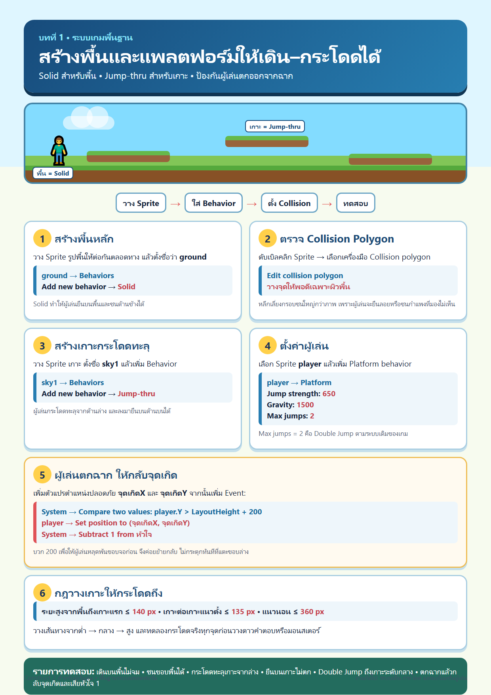
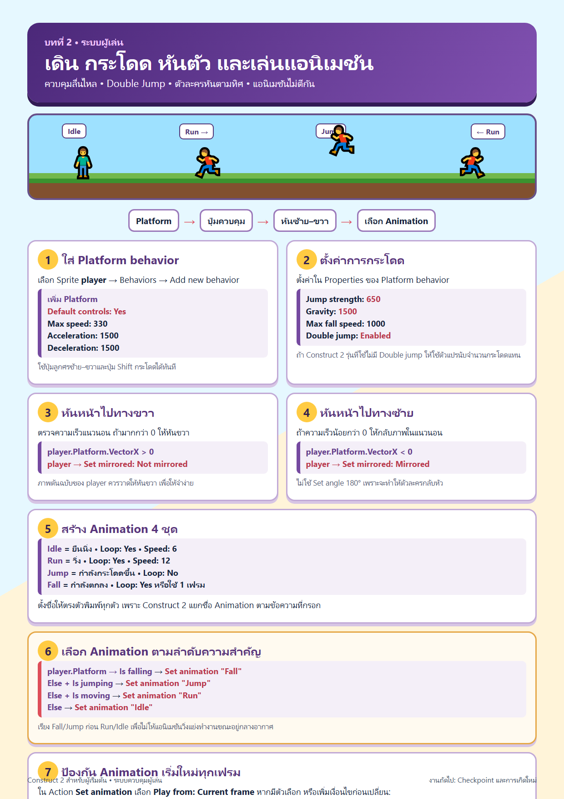
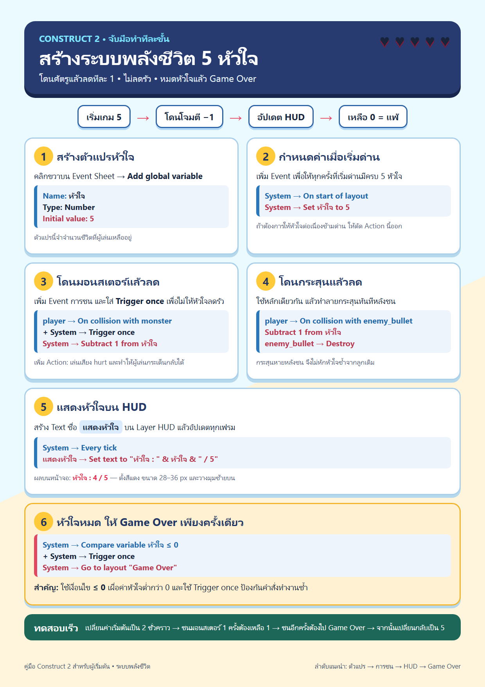
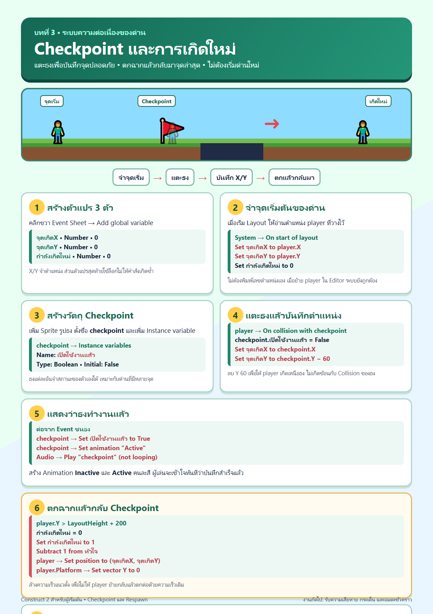
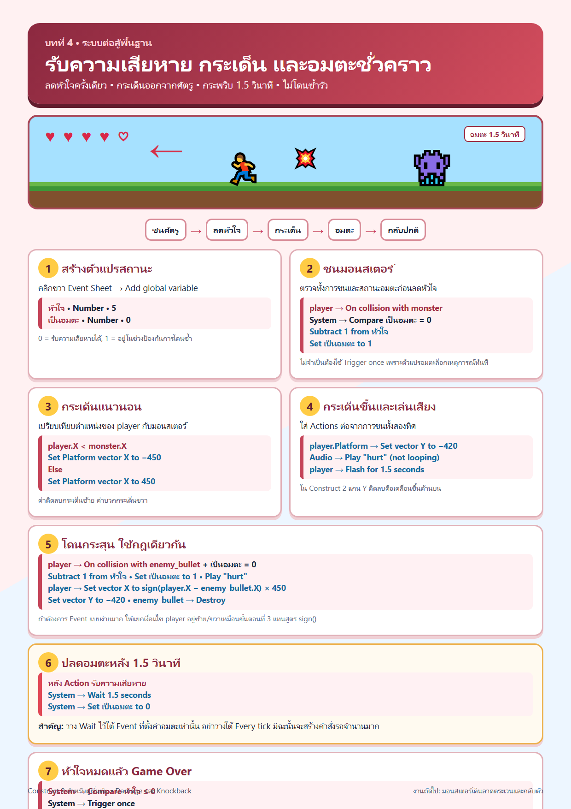
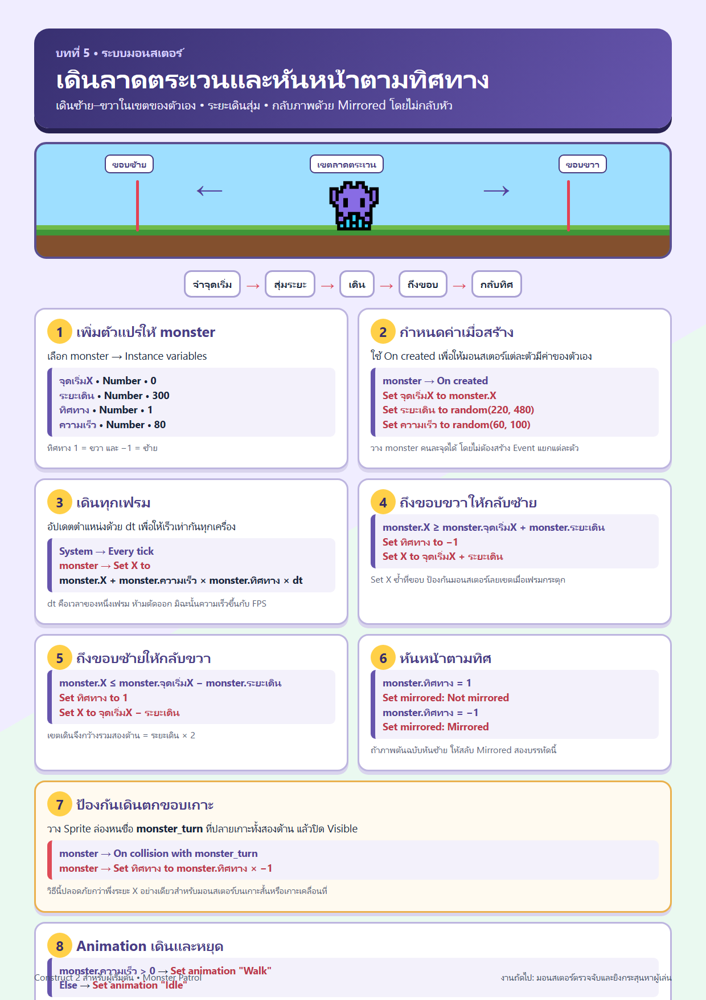
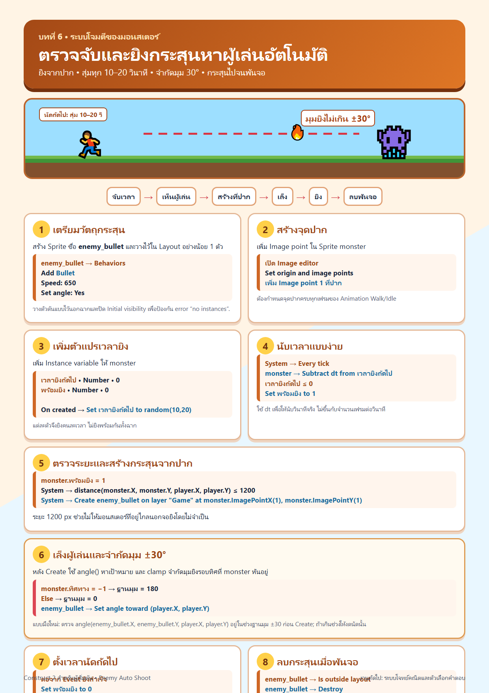
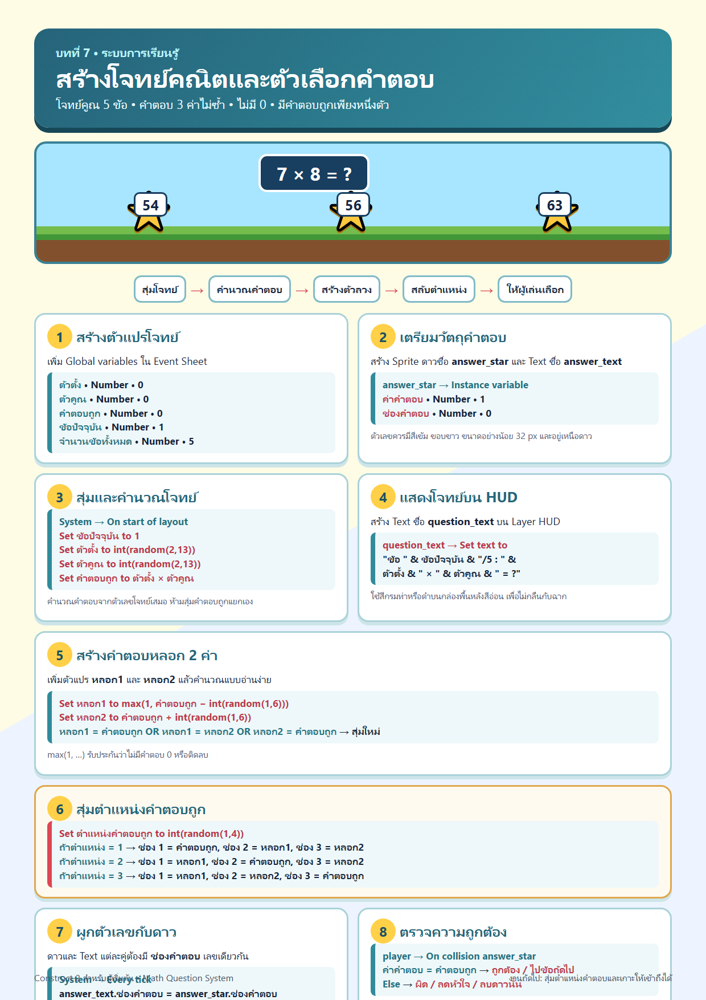
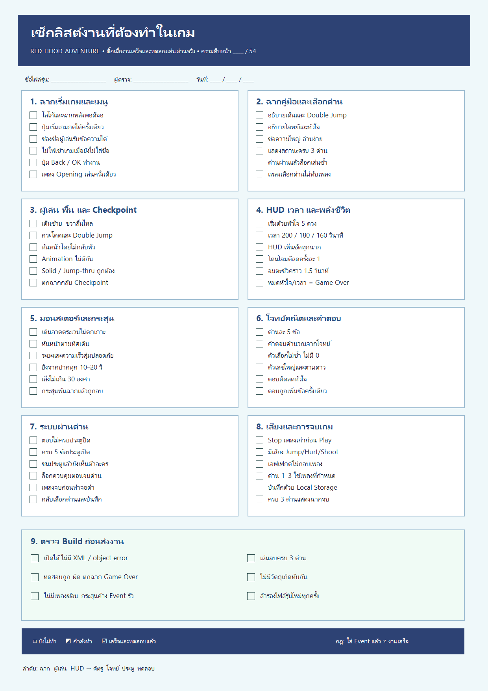

1
ระบบพื้นและแท่นกระโดด
สร้างพื้น Solid และแท่น Jump-thru ให้ผู้เล่นยืน กระโดด และทะลุจากด้านล่างได้
เปิดคู่มือเต็มหน้า →เรียนรู้ทีละระบบจากพื้นฐานไปจนถึงเกมคณิตศาสตร์และโครงสร้างเกมสมบูรณ์แบบ พร้อมภาพ Event Sheet ภาษาไทยที่เปิดดูและทำตามได้ทันที
เปิด Construct 2 ควบคู่กับคู่มือ เลือกบทตามลำดับ กด “เปิดคู่มือเต็มหน้า” แล้วสร้าง Object, Behavior และ Event ตามภาพทีละขั้น จากนั้น Preview ทดสอบทุกครั้งก่อนขึ้นบทต่อไป
แนะนำให้ทำตามลำดับ 1–16 เพื่อให้ระบบเชื่อมต่อกันเป็นเกมสมบูรณ์

สร้างพื้น Solid และแท่น Jump-thru ให้ผู้เล่นยืน กระโดด และทะลุจากด้านล่างได้
เปิดคู่มือเต็มหน้า →
ตั้ง Platform behavior และเปลี่ยนภาพตัวละครให้ตรงกับการเคลื่อนไหว
เปิดคู่มือเต็มหน้า →
สร้างตัวแปรหัวใจ อัปเดต HUD และตรวจ Game Over เมื่อพลังชีวิตหมด
เปิดคู่มือเต็มหน้า →
บันทึกตำแหน่งล่าสุด และพาผู้เล่นกลับมาเมื่อหล่นฉากหรือเสียชีวิต
เปิดคู่มือเต็มหน้า →
ลดหัวใจ กระเด็นถอยหลัง และป้องกันการเสียเลือดซ้ำในช่วงสั้น ๆ
เปิดคู่มือเต็มหน้า →

สร้างกระสุนจากปาก เล็งผู้เล่น และกำหนดช่วงเวลายิงให้สมเหตุสมผล
เปิดคู่มือเต็มหน้า →
ประตูเปลี่ยนสเตตัสเมื่อตอบครบ 5 ข้อ ล็อกปุ่ม และสลับฉากไปยัง Layout ถัดไป
เปิดคู่มือเต็มหน้า →สร้างหน้าแรกรับชื่อนักเรียนด้วย Textbox ตรวจห้ามว่าง และระบบเลือกด่าน 1–3
เปิดคู่มือเต็มหน้า →นับเวลาถอยหลัง 180 วินาที แสดงผล format นาที:วินาที และเพิ่มคะแนนสะสม
เปิดคู่มือเต็มหน้า →เล่นเพลงประกอบ BGM วนลูป หยุดเพลงเดิมก่อนเปลี่ยนฉาก และเสียง FX ต่อสู้
เปิดคู่มือเต็มหน้า →จำชื่อผู้เล่น ด่านสูงสุดที่ผ่าน และคะแนนสูงสุดด้วย LocalStorage
เปิดคู่มือเต็มหน้า →ทำหลอด HP บอส และสลับแพตเทิร์นการโจมตี 3 เฟสเมื่อเลือดลดลง
เปิดคู่มือเต็มหน้า →คำนวณดาวประเมิน 1–3 ดาว แสดงแผ่นเกียรติบัตรจำลอง ชื่อนักเรียน และคะแนนรวม
เปิดคู่มือเต็มหน้า →ส่งออกโปรเจกต์เป็น HTML5 Website และนำเข้าสู่ระบบคลังสื่อ Kampai School
เปิดคู่มือเต็มหน้า →ติ๊กงานที่ทำเสร็จได้จริง ระบบจะจำสถานะไว้ในเครื่องนี้ เหมาะสำหรับตรวจงานตั้งแต่ฉากแรกจนถึงระบบผ่านด่าน
เปิดเช็กลิสต์แบบโต้ตอบ